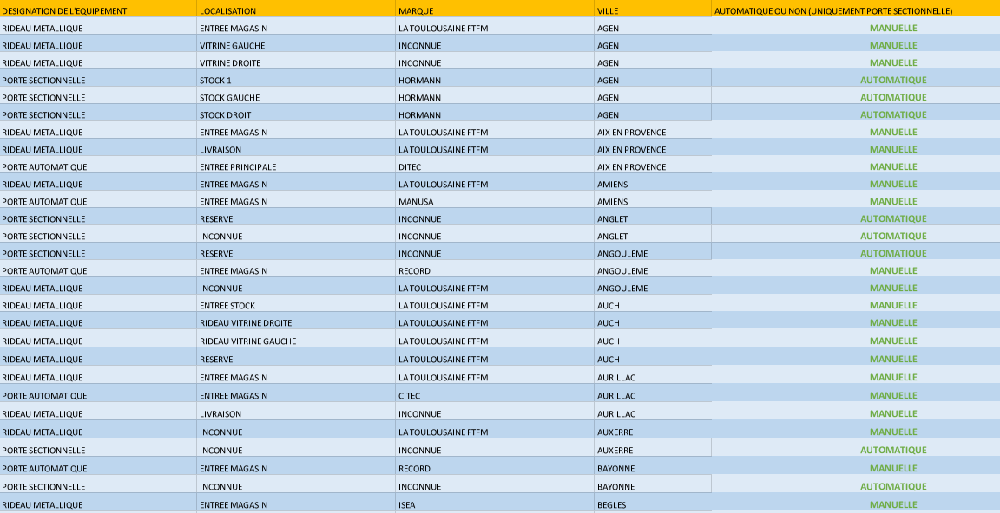
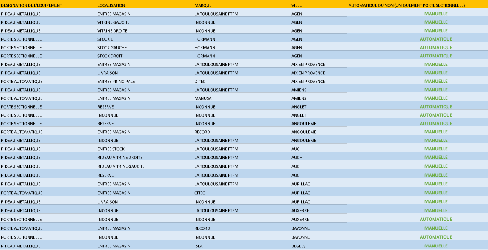

Contribuer à la rédaction d'un cahier des charges
Dans le cadre d’un changement de prestataire, j’ai rédigé un cahier des charges complet. Il concerne la maintenance des fermetures industrielles : rideaux métalliques, portes sectionnelles et portes automatiques. L’objectif était de définir clairement les besoins pour trouver un nouveau prestataire capable d’intervenir sur plusieurs sites.
J’ai précisé les délais à respecter pour les dépannages urgents (4h) et non urgents (24h), ainsi que les modalités pour la maintenance préventive. J’ai aussi défini comment devaient être gérés les échanges avec l’entreprise, notamment avec un interlocuteur unique. Le document mentionne aussi les règles de sécurité à suivre et les documents à fournir.
Enfin, j’ai mis en place un système de reporting régulier. Il permet de suivre l’état des équipements, les interventions réalisées et celles à venir. Ce travail m’a permis d’utiliser mes compétences techniques pour structurer un document clair et utile à l’entreprise.
 
